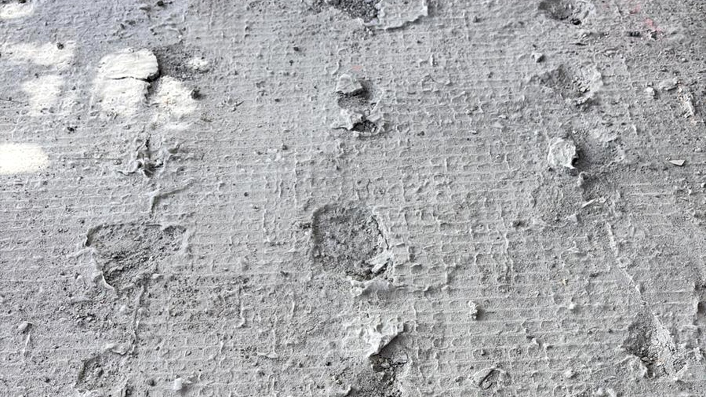
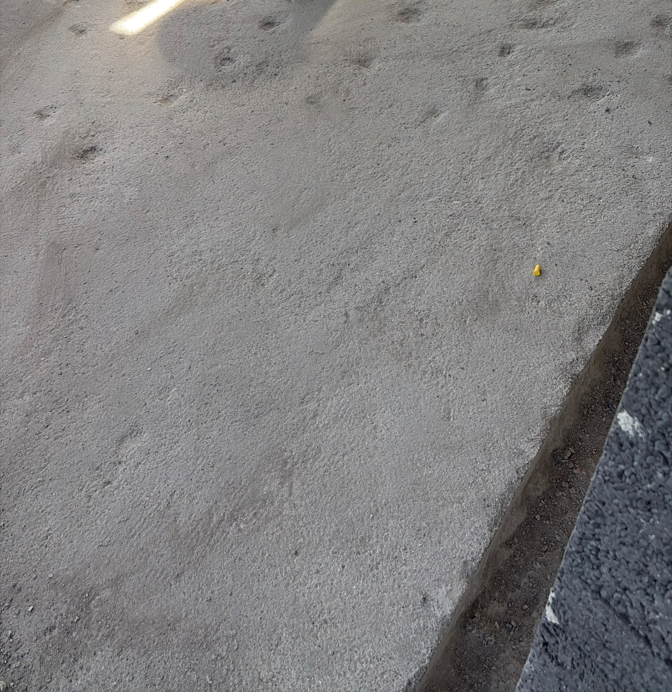

Referenzprojekt
Fräsarbeiten Untergrundvorbereitung
Vorher-Nachher-Projekt zur Untergrundvorbereitung. Unebenheiten und lose Stellen wurden maschinell abgefräst, damit eine tragfähige und gleichmässige Fläche entsteht.
Offerte anfordern

Vorher NachherFräsen und vorbereiten
Die Betonfläche wurde mit geeigneten Maschinen bearbeitet. Ziel war es, störende Unebenheiten und schwache Stellen zu entfernen und den Untergrund für die weiteren Sanierungsarbeiten vorzubereiten.
- Maschinelles Fräsen der Betonfläche
- Entfernung loser und unebener Stellen
- Untergrundvorbereitung für nachfolgende Arbeiten
- Saubere Bearbeitung der Fläche mit Absaugung